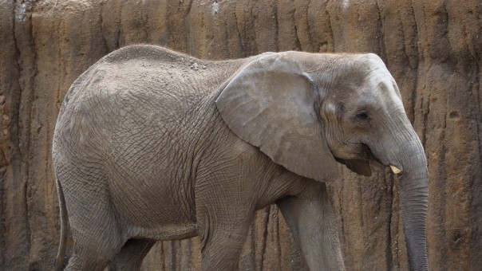
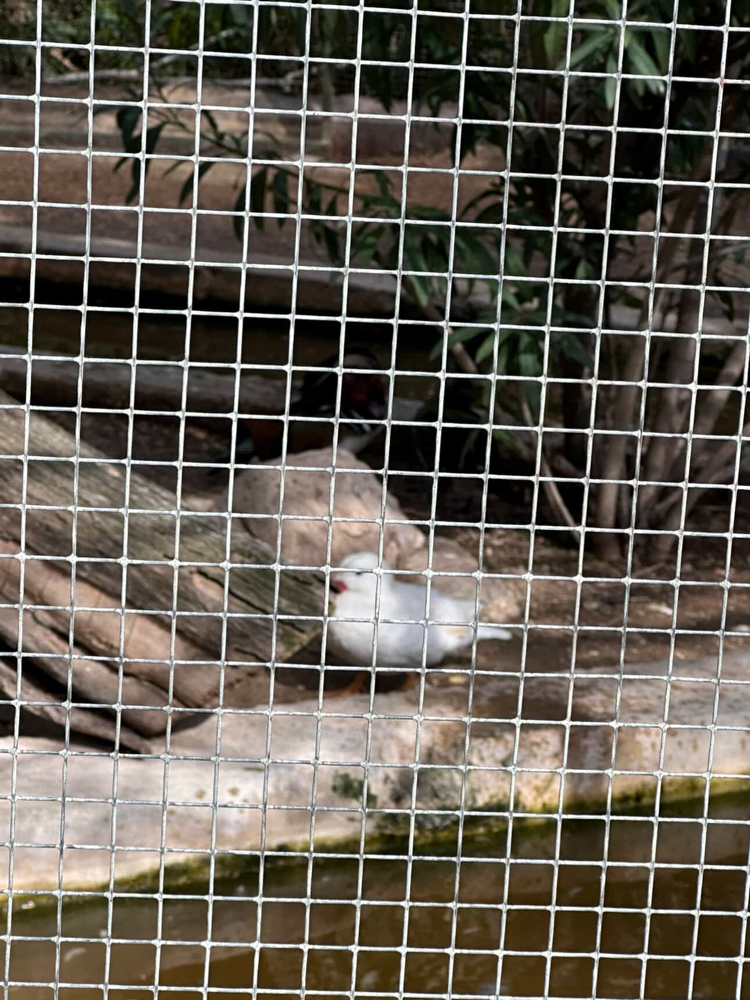
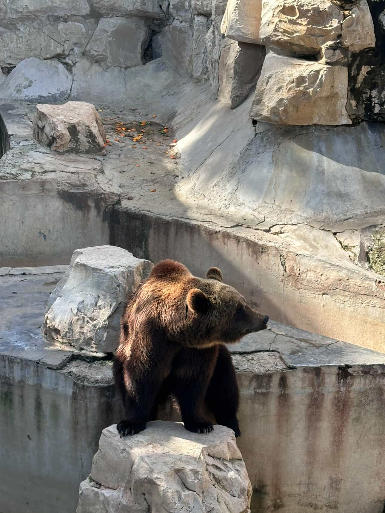

Derrière chaque regard fatigué, il y a une histoire. Certains de nos animaux ont été sauvés de conditions difficiles, d’autres luttent contre la maladie, l’âge ou la perte de leur habitat naturel. Ils dépendent entièrement de notre protection et de notre bienveillance.
des animaux du zoo sont des espèces menacées
d'espèces menacées dans le monde
Votre don permet de leur offrir des soins vétérinaires, une alimentation adaptée, un environnement plus sûr et digne, ainsi que de soutenir les actions de protection et de conservation des espèces menacées. Même un petit geste peut faire une grande différence dans leur vie.
Une aventure extraordinaire au cœur de la nature sauvage. Depuis 1985, nous nous engageons pour la conservation des espèces et l'éducation environnementale.
Allée de la Kobba, Tunis
Ouvert toute l'année
Nos animaux
Nos hôtels
Nos espaces